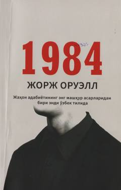

1ЖTotalitar tuzum va erkinlik kurashini ochib beruvchi mashhur antiutopik roman.
Ushbu asar totalitar tuzum va shaxs erkinligining poymol etilishi haqidagi eng mashhur romanlardan biridir. Kitobda nazorat ostidagi jamiyatda yashovchi bosh qahramonning tizimga qarshi kurashi va uning fojiali oqibatlari tasvirlangan. Asar jahon adabiyotining durdonalari sirasiga kiradi.